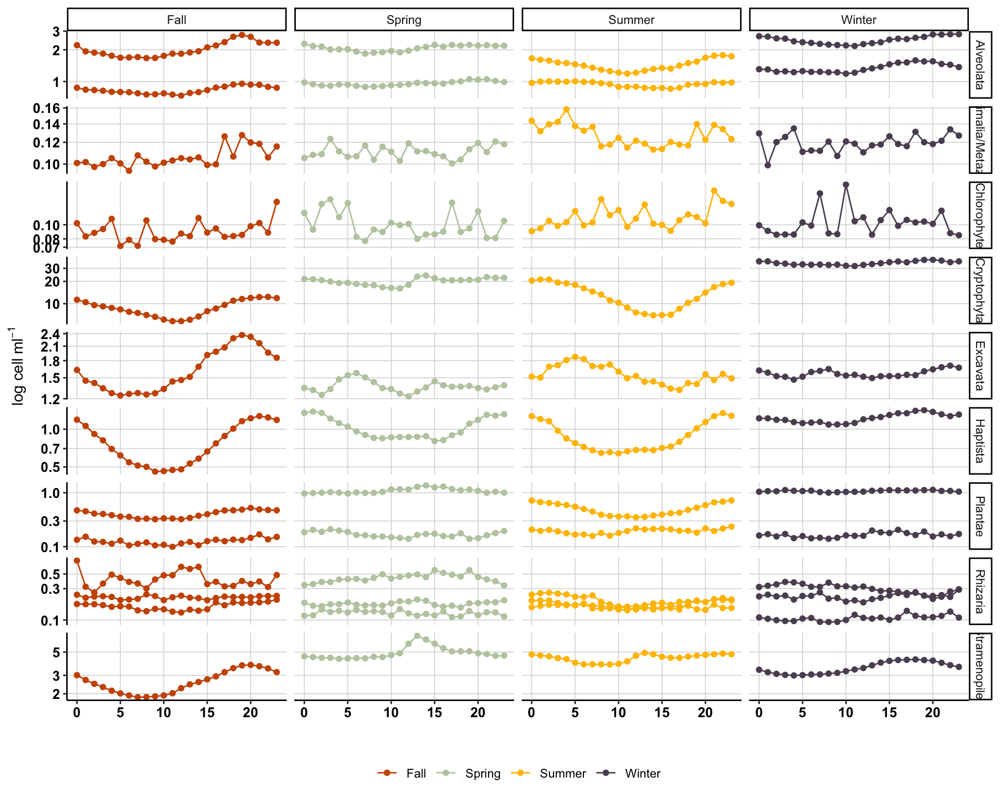
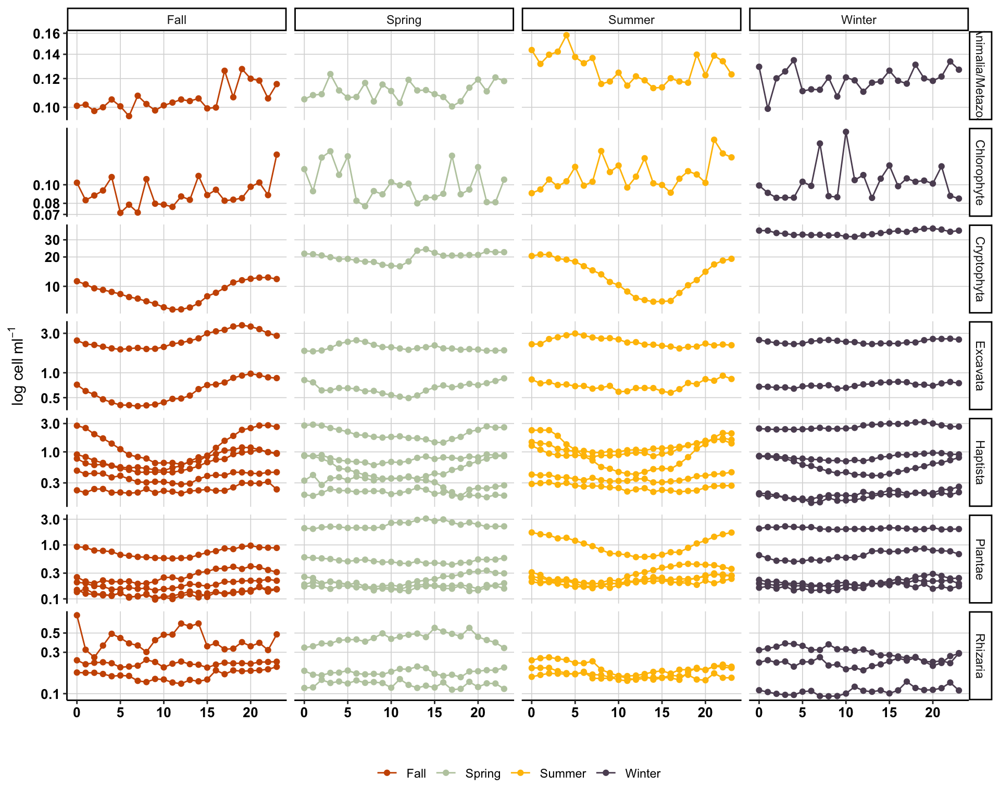

── Attaching core tidyverse packages ──────────────────────── tidyverse 2.0.0 ──
✔ dplyr 1.1.4 ✔ readr 2.1.5
✔ forcats 1.0.0 ✔ stringr 1.5.1
✔ ggplot2 3.5.2 ✔ tibble 3.2.1
✔ lubridate 1.9.4 ✔ tidyr 1.3.1
✔ purrr 1.0.4
── Conflicts ────────────────────────────────────────── tidyverse_conflicts() ──
✖ dplyr::filter() masks stats::filter()
✖ dplyr::lag() masks stats::lag()
ℹ Use the conflicted package (<http://conflicted.r-lib.org/>) to force all conflicts to become errors
Code
library(patchwork)library(svglite)library(scales)
Attaching package: 'scales'
The following object is masked from 'package:purrr':
discard
The following object is masked from 'package:readr':
col_factor
Welcome to compositions, a package for compositional data analysis.
Find an intro with "? compositions"
Attaching package: 'compositions'
The following objects are masked from 'package:stats':
anova, cor, cov, dist, var
The following object is masked from 'package:graphics':
segments
The following objects are masked from 'package:base':
%*%, norm, scale, scale.default
Loading required package: permute
Loading required package: lattice
2 Preliminary input data
All data from Port Aransas. Counts by hour. Remove data before January 1 2008, as it was newly deployed and has some inconsistencies. Also using lubridate to convert to R-friendly date/time formats.
Time zone is UTC and units of carbon are pg C per cell.
# tax_export <- counts %>% # pivot_longer(cols = -c(DAY), names_to = "CELL_ID", values_to = "COUNT") %>% #Add in time here when we have it.# select(CELL_ID) %>% distinct()
Warning: One or more parsing issues, call `problems()` on your data frame for details,
e.g.:
dat <- vroom(...)
problems(dat)
Rows: 174802 Columns: 14
── Column specification ────────────────────────────────────────────────────────
Delimiter: " "
chr (2): X1, X14
dbl (4): X4, X7, X9, X11
lgl (7): X3, X5, X6, X8, X10, X12, X13
time (1): X2
ℹ Use `spec()` to retrieve the full column specification for this data.
ℹ Specify the column types or set `show_col_types = FALSE` to quiet this message.
Code
head(tabs_d)
# A tibble: 6 × 14
X1 X2 X3 X4 X5 X6 X7 X8 X9 X10 X11 X12 X13
<chr> <tim> <lgl> <dbl> <lgl> <lgl> <dbl> <lgl> <dbl> <lgl> <dbl> <lgl> <lgl>
1 10/15… 08:00 NA 26.1 NA NA 4.93 NA 31.5 NA 0 NA NA
2 10/15… 08:30 NA 26.1 NA NA 4.93 NA 31.5 NA 0 NA NA
3 10/15… 09:00 NA 26.1 NA NA 4.93 NA 31.5 NA 0 NA NA
4 10/15… 09:30 NA 25.8 NA NA 4.87 NA 31.2 NA 0 NA NA
5 10/15… 10:00 NA 25.9 NA NA 4.87 NA 31.2 NA 0 NA NA
6 10/15… 10:30 NA 25.9 NA NA 4.87 NA 31.1 NA 0 NA NA
# ℹ 1 more variable: X14 <chr>
Code
# ?read_delim()tabs_d_qc <- tabs_d %>%select(date = X1, time = X2, temp = X4, sal = X9)head(tabs_d_qc)
Above data from TABs starts in 2010. Import other TABS data that has earlier temperature values. Column headers are: | (UTC) | (cm/s)| (cm/s)| (cm/s)| (0T) | (0C) |
Rows: 126912 Columns: 1
── Column specification ────────────────────────────────────────────────────────
Delimiter: "\t"
chr (1): X1
ℹ Use `spec()` to retrieve the full column specification for this data.
ℹ Specify the column types or set `show_col_types = FALSE` to quiet this message.
Warning: There was 1 warning in `mutate()`.
ℹ In argument: `whole_date = mdy_hms(DATE_TIME)`.
Caused by warning:
! 2 failed to parse.
Code
head(temp_tabs)
# A tibble: 6 × 8
DATE MONTH DAY HOUR MIN TEMP SAL NOTES
<date> <dbl> <int> <int> <int> <chr> <lgl> <chr>
1 2008-01-01 1 1 0 0 16.2 NA temp from TABS D water vel data
2 2008-01-01 1 1 0 30 16.3 NA temp from TABS D water vel data
3 2008-01-01 1 1 1 0 16.3 NA temp from TABS D water vel data
4 2008-01-01 1 1 1 30 16.3 NA temp from TABS D water vel data
5 2008-01-01 1 1 2 0 16.2 NA temp from TABS D water vel data
6 2008-01-01 1 1 2 30 16.1 NA temp from TABS D water vel data
Combine all temperature data and some salinity data.
# A tibble: 6 × 8
DATE MONTH DAY HOUR MIN TEMP SAL NOTES
<date> <dbl> <int> <dbl> <dbl> <chr> <dbl> <chr>
1 2008-01-01 1 1 0 0 16.2 NA temp from TABS D water vel data
2 2008-01-01 1 1 0 30 16.3 NA temp from TABS D water vel data
3 2008-01-01 1 1 1 0 16.3 NA temp from TABS D water vel data
4 2008-01-01 1 1 1 30 16.3 NA temp from TABS D water vel data
5 2008-01-01 1 1 2 0 16.2 NA temp from TABS D water vel data
6 2008-01-01 1 1 2 30 16.1 NA temp from TABS D water vel data
agency_cd site_no date water_temp_C water_temp_code discharge_cfs
1 USGS 7374000 2007-01-01 9.8 A 431000
2 USGS 7374000 2007-01-02 9.6 A 458000
3 USGS 7374000 2007-01-03 9.2 A 499000
4 USGS 7374000 2007-01-04 9.1 A 540000
5 USGS 7374000 2007-01-05 9.4 A 585000
6 USGS 7374000 2007-01-06 9.3 A 605000
discharge_code gage_height_ft gage_height_code conductivity_uScm
1 A 17.32 A 376
2 A 18.64 A 358
3 A 20.61 A 363
4 A 22.43 A 377
5 A 24.30 A 360
6 A 25.07 A 345
conductivity_code dissolved_oxygen_mgL dissolved_oxygen_code turbidity_ntu
1 A NA <NA> 0.2
2 A NA <NA> 0.2
3 A NA <NA> 0.2
4 A 10.5 A 0.2
5 A 10.4 A 0.2
6 A 10.4 A 0.2
turbidity_code salinity_psu salinity_code pH pH_code
1 A NA <NA> NA <NA>
2 A NA <NA> NA <NA>
3 A NA <NA> NA <NA>
4 A NA <NA> NA <NA>
5 A NA <NA> NA <NA>
6 A NA <NA> NA <NA>
Moon.Phase Date Time..Universal.Time.
1 Full Moon 2007 Jan 3 13:57
2 Last Quarter 2007 Jan 11 12:45
3 New Moon 2007 Jan 19 4:01
4 First Quarter 2007 Jan 25 23:01
5 Full Moon 2007 Feb 2 5:45
6 Last Quarter 2007 Feb 10 9:51
Phase DATE MONTH DAY
1 Full Moon 2007-01-03 1 3
2 Last Quarter 2007-01-11 1 11
3 New Moon 2007-01-19 1 19
4 First Quarter 2007-01-25 1 25
5 Full Moon 2007-02-02 2 2
6 Last Quarter 2007-02-10 2 10
Joining with `by = join_by(DATE, MONTH, DAY, HOUR, MIN)`
Warning in left_join(., tide_height_df): Detected an unexpected many-to-many relationship between `x` and `y`.
ℹ Row 2697 of `x` matches multiple rows in `y`.
ℹ Row 32740 of `y` matches multiple rows in `x`.
ℹ If a many-to-many relationship is expected, set `relationship =
"many-to-many"` to silence this warning.
Code
head(temp_sal_gauge_rain_moon_tide)
# A tibble: 6 × 14
DATE MONTH DAY HOUR MIN TEMP SAL NOTES gage_height_ft PRECIP_in
<date> <dbl> <int> <dbl> <dbl> <chr> <dbl> <chr> <dbl> <dbl>
1 2008-01-01 1 1 0 0 16.2 NA temp … 23.0 NA
2 2008-01-01 1 1 0 30 16.3 NA temp … 23.0 NA
3 2008-01-01 1 1 1 0 16.3 NA temp … 23.0 0
4 2008-01-01 1 1 1 30 16.3 NA temp … 23.0 NA
5 2008-01-01 1 1 2 0 16.2 NA temp … 23.0 NA
6 2008-01-01 1 1 2 30 16.1 NA temp … 23.0 NA
# ℹ 4 more variables: Phase <chr>, MLLW <dbl>, DIFFERENCE <dbl>,
# tide_direction <chr>
# folder_path <- "/Users/skhu/Desktop/Projects/GoM-IFCB-PortAransas/input-data/TABS_D"# file_list <- list.files(folder_path, pattern = "*.txt", full.names = TRUE)# # # Print the list of files to ensure they are correctly detected# print(file_list)
Function to load and format input data
Code
# load_and_preprocess <- function(file_path) {# # Read the file, skipping the first two header lines# data <- read_table(file_path, skip = 2, col_names = FALSE)# # # Assign proper column names for PTAT2# colnames(data) <- c("YY","MM","DD","hh","mm",# "DEPTH","OTMP","COND","SAL","O2%","O2PPM",# "CLCON","TURB","PH","EH")# # # Combine date and time columns into a datetime column using lubridate# data <- data %>%# mutate(# YY = as.integer(YY),# MM = as.integer(MM),# DD = as.integer(DD),# hh = as.integer(hh),# mm = as.integer(mm),# datetime = make_datetime(YY, MM, DD, hh, mm) # Ensure hourly accuracy# )# # return(data)# }
Code
# Load and merge all data files# all_data <- file_list %>%# lapply(load_and_preprocess) %>%# bind_rows()# # # Check the combined dataset# print(dim(all_data)) # Print the dimensions of the data# print(head(all_data)) # View the first few rows# table(all_data$O2PPM)# range(all_data$datetime)
5.1 ARCHIVE
Code
# folder_path <- "/Users/skhu/Desktop/Projects/GoM-IFCB-PortAransas/input-data/PTAT2/Standard-Meterological-Data/"# file_list <- list.files(folder_path, pattern = "*.txt", full.names = TRUE)# # # Print the list of files to ensure they are correctly detected# print(file_list)
Function to load and format input data
Code
# load_and_preprocess <- function(file_path) {# # Read the file, skipping the first two header lines# data <- read_table(file_path, skip = 2, col_names = FALSE)# # # # Assign proper column names for PTAT2# # colnames(data) <- c("YY", "MM", "DD", "hh", "mm", "WDIR", "WSPD", "GST",# # "WVHT", "DPD", "APD", "MWD", "PRES", "ATMP", "WTMP",# # "DEWP", "VIS", "TIDE")# # # Combine date and time columns into a datetime column using lubridate# data <- data %>%# mutate(# YY = as.integer(YY),# MM = as.integer(MM),# DD = as.integer(DD),# hh = as.integer(hh),# mm = as.integer(mm),# datetime = make_datetime(YY, MM, DD, hh, mm) # Ensure hourly accuracy# )# # return(data)# }
Code
# Load and merge all data files# all_data <- file_list %>%# lapply(load_and_preprocess) %>%# bind_rows()# Check the combined dataset# print(dim(all_data)) # Print the dimensions of the data# print(head(all_data)) # View the first few rows# range(all_data$datetime)
Below needs to modified. We cannot group by year - we need to look at a parameters over time.
Code
# Extract year for aggregation# head(all_data)# all_data <- all_data %>%# unite(day, YY, MM, DD, sep = "-", remove = FALSE) %>% # mutate(year = format(datetime, "%Y"))# # # Group by year and calculate averages# yearly_data <- all_data %>%# group_by(year) %>%# summarize(# avg_ATMP = mean(as.numeric(ATMP), na.rm = TRUE),# avg_WTMP = mean(as.numeric(WTMP), na.rm = TRUE)# )# # # Convert year to a numeric format for plotting# yearly_data$year <- as.numeric(yearly_data$year)# # # Check the aggregated data# print(head(yearly_data))# # # # Create a full sequence of years# full_years <- data.frame(year = 2008:2017)# # # Merge the full sequence with the aggregated data# yearly_data <- full_years %>%# left_join(yearly_data, by = "year")# # # Check the updated yearly data# print(yearly_data)
6 Combine with IFCB data
Code
head(combined_gom_long_season)
# A tibble: 6 × 21
DAY DATE MONTH HOUR CELL_ID CARBON
<dttm> <date> <dbl> <int> <chr> <dbl>
1 2008-01-01 00:00:00 2008-01-01 1 0 Akashiwo 159.
2 2008-01-01 00:00:00 2008-01-01 1 0 Anabaena 0.559
3 2008-01-01 00:00:00 2008-01-01 1 0 Apedinella 227.
4 2008-01-01 00:00:00 2008-01-01 1 0 Asterionellopsis 10.4
5 2008-01-01 00:00:00 2008-01-01 1 0 Beads 357.
6 2008-01-01 00:00:00 2008-01-01 1 0 Centric 2285.
# ℹ 15 more variables: COURSE_CLASSIFICATION <chr>, TYPE <chr>, Domain <chr>,
# Supergroup <chr>, Phylum <chr>, Class <chr>, Order <chr>, Family <chr>,
# Genus <chr>, Species <chr>, COUNT <dbl>, SEASON <chr>, START <date>,
# END <date>, DAY_NOYEAR <date>
Code
head(hourly_metadata)
# A tibble: 6 × 14
DATE MONTH DAY HOUR MIN TEMP SAL NOTES gage_height_ft PRECIP_in
<date> <dbl> <int> <dbl> <dbl> <chr> <dbl> <chr> <dbl> <dbl>
1 2008-01-01 1 1 0 0 16.2 NA temp … 23.0 NA
2 2008-01-01 1 1 1 0 16.3 NA temp … 23.0 0
3 2008-01-01 1 1 2 0 16.2 NA temp … 23.0 NA
4 2008-01-01 1 1 3 0 16.0 NA temp … 23.0 NA
5 2008-01-01 1 1 4 0 15.9 NA temp … 23.0 NA
6 2008-01-01 1 1 5 0 15.8 NA temp … 23.0 NA
# ℹ 4 more variables: Phase <chr>, MLLW <dbl>, DIFFERENCE <dbl>,
# tide_direction <chr>
Code
combined_biol_metadata <- hourly_metadata %>%right_join(combined_gom_long_season, by =join_by(DATE, MONTH, HOUR))
Warning in right_join(., combined_gom_long_season, by = join_by(DATE, MONTH, : Detected an unexpected many-to-many relationship between `x` and `y`.
ℹ Row 1 of `x` matches multiple rows in `y`.
ℹ Row 103889 of `y` matches multiple rows in `x`.
ℹ If a many-to-many relationship is expected, set `relationship =
"many-to-many"` to silence this warning.
values_byweek <- plot_biotic %>%filter(COURSE_CLASSIFICATION =="Microeukaryote") %>%filter(Supergroup !="Plantae"& Supergroup !="Animalia/Metazoa") %>%select(-START, -END, -DAY_NOYEAR) %>%pivot_longer(cols =-c(DATE, CELL_ID, COURSE_CLASSIFICATION, TYPE, Domain, Supergroup, Phylum, Class, Order, Family, Genus, Species, SEASON), names_to ="VARIABLE", values_to ="VALUE") %>%distinct() %>%# Average the variable PER day for a single Cell ID typegroup_by(VARIABLE, DATE, CELL_ID, SEASON) %>%summarise(MEAN_bycell_day =mean(VALUE)) %>%ungroup() %>%# Sum total cells for a single daygroup_by(DATE, SEASON, VARIABLE) %>%summarise(SUM_byday =sum(MEAN_bycell_day)) %>%ungroup() %>%# Add a column to specify the WEEK - have week start on Mondaysmutate(WEEK =cut(DATE, "week", start.on.monday =TRUE),MONTH =month(as_date(DATE)),YEAR =year(as_date(DATE))) %>%# Get mean, min, and max for each weekgroup_by(WEEK, SEASON, YEAR, VARIABLE) %>%summarise(MEAN_WEEK =mean(SUM_byday),MAX_WEEK =max(SUM_byday),MIN_WEEK =min(SUM_byday))
`summarise()` has grouped output by 'VARIABLE', 'DATE', 'CELL_ID'. You can
override using the `.groups` argument.
`summarise()` has grouped output by 'DATE', 'SEASON'. You can override using
the `.groups` argument.
`summarise()` has grouped output by 'WEEK', 'SEASON', 'YEAR'. You can override
using the `.groups` argument.
This is a good supplementary figure or summary figure for a poster explaining the IFCB.
Plot biotic - one year
Code
head(plot_biotic)
# A tibble: 6 × 19
DATE CELL_ID COURSE_CLASSIFICATION TYPE Domain Supergroup Phylum Class
<date> <chr> <chr> <chr> <chr> <chr> <chr> <chr>
1 2008-01-01 Akashiwo Microeukaryote Cell "Euka… "Alveolat… "Dino… "Din…
2 2008-01-01 Anabaena Cyanobacteria Cell "Bact… "Cyanobac… "Cyan… "Cya…
3 2008-01-01 Apedine… Microeukaryote Cell "Euka… "Strameno… "Ochr… "Dic…
4 2008-01-01 Asterio… Microeukaryote Cell "Euka… "Strameno… "Ochr… "Bac…
5 2008-01-01 Beads IFCB excess Non-… "" "" "" ""
6 2008-01-01 Centric Microeukaryote Cell… "Euka… "Strameno… "Ochr… "Bac…
# ℹ 11 more variables: Order <chr>, Family <chr>, Genus <chr>, Species <chr>,
# SEASON <chr>, CARBON <dbl>, COUNT <dbl>, pgC_ml <dbl>, START <date>,
# END <date>, DAY_NOYEAR <date>
Code
biotic_1yr <- plot_biotic %>%# Group by cell ID to get mean for a single daygroup_by(DAY_NOYEAR, DATE, CELL_ID, SEASON, COURSE_CLASSIFICATION) %>%summarise(PER_DAY_CELL =mean(COUNT),PER_DAY_CARBON =mean(CARBON),PER_DAY_CARBON_ml =mean(pgC_ml)) %>%ungroup() %>%# NOW sum up the different cell types that contribute to the course classification per daygroup_by(DAY_NOYEAR, DATE, SEASON, COURSE_CLASSIFICATION) %>%summarise(PER_DAY_COURSE_CELL =sum(PER_DAY_CELL),PER_DAY_COURSE_CARBON =sum(PER_DAY_CARBON),PER_DAY_COURSE_CARBONml =sum(PER_DAY_CARBON_ml)) %>%ungroup() %>%# Now average by yeargroup_by(DAY_NOYEAR, COURSE_CLASSIFICATION, SEASON) %>%summarise(MEAN_COUNTS_1yr =mean(PER_DAY_COURSE_CELL),MEAN_CARBON_1yr =mean(PER_DAY_COURSE_CARBON),MEAN_CARBONml_1yr =mean(PER_DAY_COURSE_CARBONml))
`summarise()` has grouped output by 'DAY_NOYEAR', 'DATE', 'CELL_ID', 'SEASON'.
You can override using the `.groups` argument.
`summarise()` has grouped output by 'DAY_NOYEAR', 'DATE', 'SEASON'. You can
override using the `.groups` argument.
`summarise()` has grouped output by 'DAY_NOYEAR', 'COURSE_CLASSIFICATION'. You
can override using the `.groups` argument.
#Spring = March 1 - May 31 #Summer = June 1 - Aug 31 #Fall = Sept 1 - Nov 30 #Winter = Dec 1 - Feb (March 1 (-1))
7.2 All daily
Look at by hour and season for different supergroups.
Code
combined_biol_metadata |>filter(COURSE_CLASSIFICATION =="Microeukaryote") %>%filter(Phylum !="Cnidaria") %>%# Remove any zeroesfilter(COUNT >0|is.na(COUNT)) %>%# Get average for a given hour in the same month and season for an individual day.group_by(HOUR, SEASON, Supergroup, Phylum) %>%summarise(MEAN_COUNT_DAILY =mean(COUNT),MAX_COUNT_DAILY =max(COUNT),MIN_COUNT_DAILY =min(COUNT)) %>%ggplot(aes(x = (HOUR), y = MEAN_COUNT_DAILY, color = SEASON)) +geom_path(aes(group = Phylum)) +geom_point(shape =19) +facet_grid(rows =vars(Supergroup), cols =vars(SEASON), scales ="free") +theme_classic() +scale_color_manual(values =c("#cc5500","#bccbae","#ffbf00","#5d4e62")) +scale_y_log10() +labs(x ="", y =bquote("log cell"~ml^-1)) +theme(legend.position ="bottom", legend.title =element_blank(),axis.text.x =element_text(color ="black", face ="bold", size =10),axis.title =element_text(color ="black", face ="bold", size =11),axis.text.y =element_text(color ="black", face ="bold", size =10),panel.grid.major =element_line(color ="#d9d9d9", linewidth =0.3))
`summarise()` has grouped output by 'HOUR', 'SEASON', 'Supergroup'. You can
override using the `.groups` argument.

Each line represents a phylum, so there are some withe more variability than others. We also know that cell types are not equally represented across the supergroups in the IFCB data, therefore, we need to focus on the stramenopiles and alveolata vs. other supergroups.
Code
alv_stram <-c("Stramenopiles", "Alveolata")# counts_long_wtax_wseasoncombined_biol_metadata |>filter(COURSE_CLASSIFICATION =="Microeukaryote") %>%filter(Phylum !="Cnidaria") %>%filter(!(Supergroup %in% alv_stram)) %>%# Remove any zeroesfilter(COUNT >0|is.na(COUNT)) %>%# Get average for a given hour in the same month and season for an individual day.group_by(HOUR, SEASON, Supergroup, Phylum, CELL_ID) %>%summarise(MEAN_COUNT_DAILY =mean(COUNT),MAX_COUNT_DAILY =max(COUNT),MIN_COUNT_DAILY =min(COUNT)) %>%ggplot(aes(x = (HOUR), y = MEAN_COUNT_DAILY, color = SEASON)) +geom_path(aes(group = CELL_ID)) +geom_point(shape =19) +facet_grid(rows =vars(Supergroup), cols =vars(SEASON), scales ="free") +theme_classic() +scale_color_manual(values =c("#cc5500","#bccbae","#ffbf00","#5d4e62")) +scale_y_log10() +labs(x ="", y =bquote("log cell"~ml^-1)) +theme(legend.position ="bottom", legend.title =element_blank(),axis.text.x =element_text(color ="black", face ="bold", size =10),axis.title =element_text(color ="black", face ="bold", size =11),axis.text.y =element_text(color ="black", face ="bold", size =10),panel.grid.major =element_line(color ="#d9d9d9", linewidth =0.3))
`summarise()` has grouped output by 'HOUR', 'SEASON', 'Supergroup', 'Phylum'.
You can override using the `.groups` argument.

8 A focus on Dinoflagellates, Haptophytes, Ciliates, and diatoms
Code
head(combined_biol_metadata)
# A tibble: 6 × 32
DATE MONTH DAY.x HOUR MIN TEMP SAL NOTES gage_height_ft PRECIP_in
<date> <dbl> <int> <dbl> <dbl> <chr> <dbl> <chr> <dbl> <dbl>
1 2008-01-01 1 1 0 0 16.2 NA temp … 23.0 NA
2 2008-01-01 1 1 0 0 16.2 NA temp … 23.0 NA
3 2008-01-01 1 1 0 0 16.2 NA temp … 23.0 NA
4 2008-01-01 1 1 0 0 16.2 NA temp … 23.0 NA
5 2008-01-01 1 1 0 0 16.2 NA temp … 23.0 NA
6 2008-01-01 1 1 0 0 16.2 NA temp … 23.0 NA
# ℹ 22 more variables: Phase <chr>, MLLW <dbl>, DIFFERENCE <dbl>,
# tide_direction <chr>, DAY.y <dttm>, CELL_ID <chr>, CARBON <dbl>,
# COURSE_CLASSIFICATION <chr>, TYPE <chr>, Domain <chr>, Supergroup <chr>,
# Phylum <chr>, Class <chr>, Order <chr>, Family <chr>, Genus <chr>,
# Species <chr>, COUNT <dbl>, SEASON <chr>, START <date>, END <date>,
# DAY_NOYEAR <date>
oneyr_phylum <- combined_biol_metadata |>filter(Phylum %in% dino_diatom_cil_hapto) %>%# Remove any zeroesfilter(COUNT >0|is.na(COUNT)) %>%select(DATE, COUNT, Phylum, CELL_ID, CARBON, Class, DAY_NOYEAR) %>%distinct() %>%# Add up cell types for a single day. group_by(DATE, Phylum, CELL_ID, DAY_NOYEAR) %>%summarise(SUM_CELLS_day =sum(COUNT),SUM_CARBON_day =sum(CARBON)) %>%ungroup() %>%# Add a column to specify the WEEK - have week start on Mondays# mutate(WEEK = cut(DATE, "week", start.on.monday = TRUE),# MONTH = month(as_date(DATE)),# YEAR = year(as_date(DATE))) %>% # Get mean, min, and max for each weekgroup_by(DAY_NOYEAR, Phylum) %>%# Take average across years.# group_by(DAY_NOYEAR, Phylum) %>% summarise(MEAN_CELLS_day_1yr =mean(SUM_CELLS_day),MAX_CELLS_day_1yr =max(SUM_CELLS_day),MIN_CELLS_day_1yr =min(SUM_CELLS_day),SEM_CELLS_day_1yr = (sd(SUM_CELLS_day)/n()),MEAN_C_day_1yr =mean(SUM_CARBON_day),MAX_C_day_1yr =max(SUM_CARBON_day),MIN_C_day_1yr =min(SUM_CARBON_day),SEM_C_day_1yr = (sd(SUM_CARBON_day/n())))
`summarise()` has grouped output by 'DATE', 'Phylum', 'CELL_ID'. You can
override using the `.groups` argument.
`summarise()` has grouped output by 'DAY_NOYEAR'. You can override using the
`.groups` argument.
Code
# Standard error of the mean = SD / sample size# head(oneyr_phylum)
# A tibble: 6 × 32
DATE MONTH DAY.x HOUR MIN TEMP SAL NOTES gage_height_ft PRECIP_in
<date> <dbl> <int> <dbl> <dbl> <chr> <dbl> <chr> <dbl> <dbl>
1 2008-01-01 1 1 0 0 16.2 NA temp … 23.0 NA
2 2008-01-01 1 1 0 0 16.2 NA temp … 23.0 NA
3 2008-01-01 1 1 0 0 16.2 NA temp … 23.0 NA
4 2008-01-01 1 1 0 0 16.2 NA temp … 23.0 NA
5 2008-01-01 1 1 0 0 16.2 NA temp … 23.0 NA
6 2008-01-01 1 1 0 0 16.2 NA temp … 23.0 NA
# ℹ 22 more variables: Phase <chr>, MLLW <dbl>, DIFFERENCE <dbl>,
# tide_direction <chr>, DAY.y <dttm>, CELL_ID <chr>, CARBON <dbl>,
# COURSE_CLASSIFICATION <chr>, TYPE <chr>, Domain <chr>, Supergroup <chr>,
# Phylum <chr>, Class <chr>, Order <chr>, Family <chr>, Genus <chr>,
# Species <chr>, COUNT <dbl>, SEASON <chr>, START <date>, END <date>,
# DAY_NOYEAR <date>
Diatom genus of choice!
Code
# diatom_genus <- c("Chaetoceros", "")
Plot a year trend for Cell types within the classes.
Code
diatom_genus_oneyr <- combined_biol_metadata |>filter(Class %in%"Bacillariophyceae") %>%# Remove any zeroesfilter(COUNT >0|is.na(COUNT)) %>%select(DATE, COUNT, Order, Family, Genus, CELL_ID, CARBON, DAY_NOYEAR) %>%distinct() %>%# Add up Genus level types for a single day. group_by(DATE, Order, Family, Genus, CELL_ID, DAY_NOYEAR) %>%summarise(SUM_CELLS_day =sum(COUNT),SUM_CARBON_day =sum(CARBON)) %>%ungroup() %>%group_by(DAY_NOYEAR, Genus) %>%# Take average across years.summarise(MEAN_CELLS_day_1yr =mean(SUM_CELLS_day),MAX_CELLS_day_1yr =max(SUM_CELLS_day),MIN_CELLS_day_1yr =min(SUM_CELLS_day),SEM_CELLS_day_1yr = (sd(SUM_CELLS_day)/n()),MEAN_C_day_1yr =mean(SUM_CARBON_day),MAX_C_day_1yr =max(SUM_CARBON_day),MIN_C_day_1yr =min(SUM_CARBON_day),SEM_C_day_1yr = (sd(SUM_CARBON_day/n())))
`summarise()` has grouped output by 'DATE', 'Order', 'Family', 'Genus',
'CELL_ID'. You can override using the `.groups` argument.
`summarise()` has grouped output by 'DAY_NOYEAR'. You can override using the
`.groups` argument.
Code
# Standard error of the mean = SD / sample sizehead(diatom_genus_oneyr)
`summarise()` has grouped output by 'Supergroup', 'Phylum', 'Class', 'Order',
'Family', 'Genus', 'CELL_ID'. You can override using the `.groups` argument.
RDA reveals relationships among the sites (transcript profiles by site) and the environmental parameters. We can explore the relationship among all transcripts by site, and then model the effect that each environmental parameter has on it.
To perform the RDA analysis, we need to isolate biotic vs. abiotic parameters. Normalize them individually and then run the RDA.